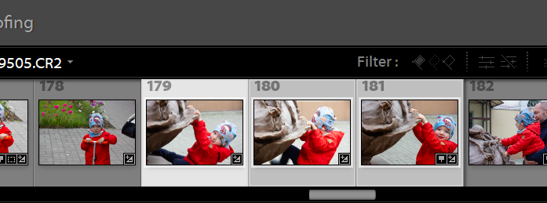
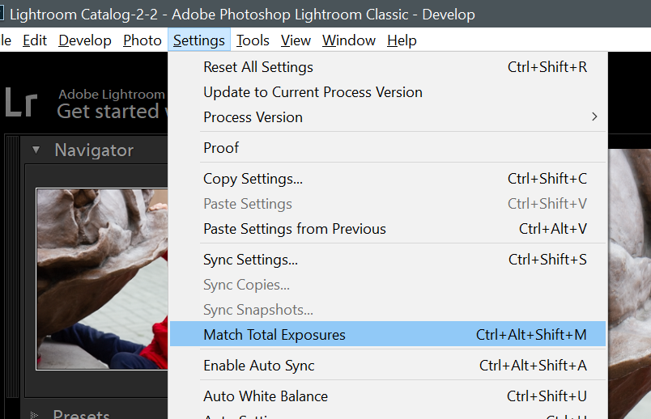

图片的校直 in lightroom
我们拍摄的照片会由于手持角度/镜头广角变形/拍摄角度等原因导致本来应该是平直的地方倾斜，下面介绍如何在 lightroom 中进行修复。
同步编辑 100 张照片 in ligthroom

在一次旅游中你可能拍摄了数百张照片，其中在同一个场景下可能会有很多类似的照片，他们的基本颜色亮度等调整应该是类似的。如果你进行了一次延时摄影的拍摄，可能会有大量的类似照片需要调整。以上场景下如果要一张张的进行调整会占用大量的时间。
这时候可以使用 lightroom 的 sync 同步功能来实现多张照片的同步调整。
匹配曝光给多张照片 in lightroom
如果在同一场景拍摄了多张照片，它们可能使用了不同的曝光，如果找到一张觉得曝光合适的照片，可以以此曝光为基准匹配到其他照片中。
进入 develop 界面，首先点击选中曝光合适的照片，然后按住 ctrl 选择其他需要匹配曝光的照片，注意基准照片是高亮的：

选择 settings - match total exposures：

lightroom 就会自动调节其他照片的曝光，匹配到基准照片的亮度。
阴影和高光处理 dodge & burn in lightroom
在 Photoshop 中，为了增加物体立体感，常常会根据物体的光照角度，通过曲线配合画笔和蒙版来调节阴影和高光。在 lightroom 中，我们可以使用 adjustment brush 来达到类似的效果。